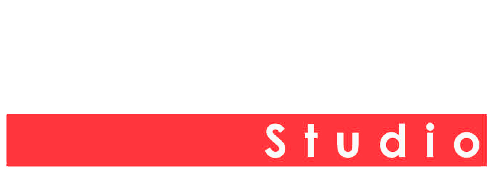

Sus cocinas ya hablan solas.
El sitio solo tiene que dejarlas hablar.
Una cocina de primer nivel no necesita que la describan. Necesita que la vean.
Por eso proponemos un sitio donde la fotografía es la protagonista absoluta — pantalla completa, sin distracciones, con la elegancia silenciosa de los mejores estudios italianos.
Impecable en el celular y en pantalla grande, porque la mayoría de sus prospectos los va a conocer desde un teléfono.
Tres piezas,
un solo sistema.
Un sitio editorial
Diseño de galería de arte: tipografía limpia, espacio en blanco generoso, fotografías a pantalla completa.
Cada proyecto merece su propia página, no una fila más en un grid.
Sus fotos se publican solas
Ustedes ya suben las fotos de cada cocina a una carpeta. El sitio detecta cada carpeta nueva y la convierte en una página de proyecto con su propia liga: kuchen.mx/p/cocina-polanco.
Cero paneles de administración, cero trabajo extra — su flujo no cambia en nada.
Prospectos atendidos al instante
Cuando alguien escribe por Facebook o WhatsApp, recibe respuesta inmediata. Si pide ejemplos, se le envía la liga a una galería de proyectos — esa misma página que se generó sola desde la carpeta de fotos.
El prospecto ve su trabajo al momento, no al día siguiente.
Ustedes siguen haciendo exactamente lo mismo.
Ese es el punto: nada de capacitación, nada de sistemas nuevos que aprender.
Terminan una cocina y suben las fotos a su carpeta, como siempre.
El sistema la detecta, optimiza las imágenes y publica su página de proyecto.
La liga queda lista para el sitio, y para que el asistente automático la comparta con prospectos.
Así se siente en la mano.
Una cortesía: primer boceto de la portada. Las fotografías finales serán, por supuesto, las suyas.


Ver el sitio en desarrollo →
En tres fases,
sin prisa y sin pausa.
El sitio
Portada, galería de proyectos y contacto. Dominio recuperado y publicado. Es lo primero que sus prospectos van a ver.
Publicación automática
Conexión con sus carpetas de fotos (Drive o Dropbox): cada proyecto nuevo genera su propia página compartible sin que nadie toque nada.
Atención a prospectos
Respuestas automáticas en Facebook y WhatsApp que saludan, responden lo básico y comparten las galerías de proyectos a quien pide ejemplos.
Qué cuesta cada pieza,
para que decidan.
Transparencia total: esto es lo que cobran los proveedores, a octubre 2026.
Nada es obligatorio — el sitio funciona sin nada de esto.
| Automatización | Básica$8,000 MXN · único | Intermedia$14,000 MXN · único | Premium$18,000 MXN · único |
|---|---|---|---|
| Auto-respuesta en WhatsApp | ✓app Business | ✓ | ✓ |
| Respuesta instantánea + FAQ en Facebook e Instagram | ✓Business Suite | ✓ | ✓ |
| Flujos guiados por ciudad y captura del prospecto | — | ✓ | ✓ |
| WhatsApp + Messenger en un solo panel | ✓Business Suite | ✓ | ✓ |
| Instagram automatizado | ✓ | ✓ | ✓ |
| IA que entiende preguntas libres | — | — | ✓ |
| Chat con IA dentro del sitio | — | ✓ | ✓ |
| Suscripción de herramientas (al proveedor) | $0 | ~$270 MXNManyChat Essential | ~$550 MXNManyChat Pro |
- La implementación es pago único en MXN.
- ManyChat se paga directo al proveedor en USD. Los precios mostrados son el equivalente mensual con facturación anual (Essential ~$14 USD/mes, Pro ~$29 USD/mes); mes a mes cuestan ~$17 y ~$39 USD respectivamente.
- El chat con IA en el sitio está incluido en Intermedia y Premium; su costo mensual de servicio va aparte (~$40–190 MXN/mes a medida, o ~$360–860 MXN/mes con Chatbase/Tidio).
- Meta no cobra las respuestas dentro de la conversación del cliente; solo plantillas de campañas salientes (~$0.03 USD c/u), opcionales.
Ya realizado — no se cobra de nuevo
El diseño y desarrollo del sitio con su galería ya fue cubierto. Lo que ven en este documento ya está en línea y funcionando.
Su dominio: kuchen.mx
Este demo vive temporalmente en GitHub Pages. En producción el sitio migrará a su propio hosting bajo kuchen.mx. Las fotos se siguen sirviendo desde su Dropbox: $0.
Dependencia: su carpeta de Dropbox
El sitio lee las fotos directamente de su carpeta compartida. Para que la galería funcione, esa carpeta debe conservar el permiso "Cualquiera con el vínculo" y no moverse ni renombrarse.
Si llegara a cambiar, los enlaces se regeneran y actualizan — es parte del soporte mensual.
Soporte y operación — $1,000 MXN/mes
Cubre:
- Configuración y ajuste de los flujos de WhatsApp/Messenger
- Procesamiento y publicación de fotos y proyectos nuevos — ustedes suben la carpeta a Dropbox, nosotros la convertimos y publicamos (incluyendo formatos como HEIC)
- Monitoreo y reporte de prospectos
- Cambios al sitio y atención técnica cuando Meta o Dropbox cambien sus reglas
Las cocinas ya están.
Las fotos ya están.
Solo falta que el mundo las vea.